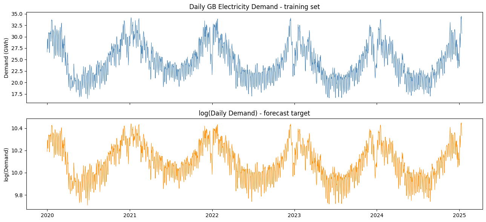
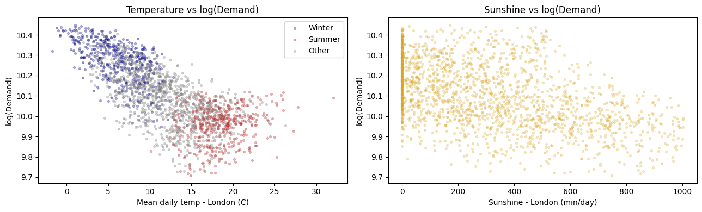
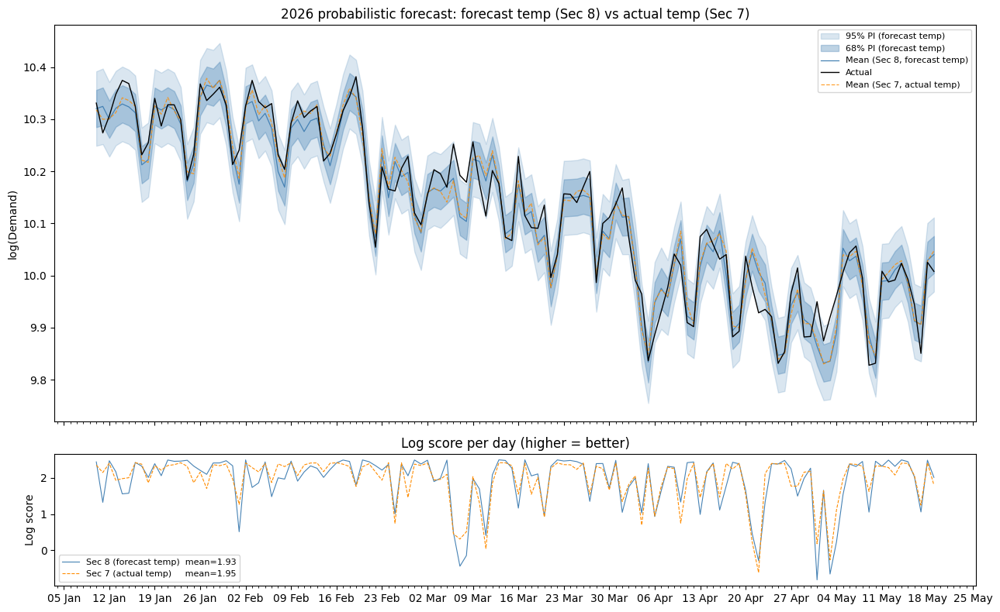

Probabilistic Electricity Demand Forecasting
The problem
Predict next-day electricity demand for England and Wales — not as a single number, but as a full probability distribution (µ, σ) — across eight live rounds of a forecasting competition. The scoring rule was log-likelihood, so it punished both inaccurate point forecasts and poorly calibrated uncertainty: a confident model that missed was penalised far more harshly than a wider, more honest one.
Approach
Three data sources: daily GB demand (National Grid), 6-hourly historical weather for London/Bristol/Leeds (Meteoblue), and day-ahead weather forecasts covering the same cities — the actual forecast inputs available at prediction time, not observed weather.
Validation design. The main risk in a forecasting competition is silently leaking future information into a model that looks great in backtests and then underperforms live. Every forecast was generated on an expanding window, refitting from scratch using only data more than two days old (the real information barrier during the competition). Model selection used a separate validation period (Jan–Mar 2025) from the final test period (Jan–May 2026), so tuning decisions couldn’t bias the reported test score.
Feature engineering (60 features). Demand responds asymmetrically to temperature — heating drives it up sharply below ~15.5°C, cooling drives it up only mildly above ~22°C — so Heating/Cooling Degree Days replaced raw temperature. Day length and sunshine (interacted with a low-heating-demand regime) captured lighting and solar-substitution effects the temperature features missed. Granular holiday dummies (Christmas, New Year, and Easter decomposed into five separate day-types), demand lags at 2/7/364 days chosen to respect both the information barrier and weekly/annual seasonality, and a temperature-anomaly term for “surprise” weather rounded out the set.
Model stack. OLS on the full feature set as the baseline — it gives an exact closed-form predictive distribution, which a tree model doesn’t. XGBoost was then fit on the OLS residuals (3-year sliding window) to pick up nonlinear interactions OLS can’t represent, and an AR(2,7) model mopped up the remaining short-term serial correlation. All corrections are additive to the mean only, so the OLS-derived predictive variance stays valid.
Sigma calibration. The multiplier on the predictive standard deviation was tuned on the validation set — but optimising the mean log-score picked an aggressive multiplier (0.783) that occasionally produced large negative scores. With only eight competition rounds, that tail risk is not something you can average away, so the multiplier actually used (1.167 for OLS alone, 0.924 for the full stack) instead maximised a risk-adjusted floor: mean minus one standard deviation.
Key findings
- The full stack beat the OLS baseline on every metric: out-of-sample mean log score of 1.931 vs. 1.682 for OLS alone (and 0.41 for a no-skill climatological baseline), RMSE of 3.57% vs. 4.47%.
- Calibrating for risk mattered as much as model choice. The mean-optimal sigma multiplier was smaller (more confident) than the one actually used — deliberately trading a little average score for protection against a single catastrophic round, which matters far more over 8 rounds than over a long backtest.
- A real unit-conversion bug cost an entire round. Forecast sunshine arrived in hours; training data was in minutes. The silent 60x mismatch underestimated sunshine and inflated the demand prediction on a particularly sunny day, dropping that round’s score to a capped 0 instead of an estimated ~2.1. It was caught, diagnosed, and fixed before the next round — the kind of live-data bug that a backtest alone won’t surface.
- Final competition score: 15.179 across the 8 rounds (negative scores capped at 0 by the competition rules).



Full report
The write-up above covers the headline results — the full report walks through the complete methodology in detail: the validation design, all 60 engineered features, the OLS/XGBoost/AR stacking rationale, and the round-by-round competition log.
Code
Asymmetric temperature response via Heating/Cooling Degree Days, one of the 60 engineered features:
for city in ["london", "leeds", "bristol"]:
features[f"HDD_{city}"] = np.maximum(0, 15.5 - df[f"temp_{city}_mean"])
features[f"CDD_{city}"] = np.maximum(0, df[f"temp_{city}_mean"] - 22.0)
features[f"temp_{city}_spread"] = df[f"temp_{city}_max"] - df[f"temp_{city}_min"]
# Lagged HDD (thermal inertia) and a weekend interaction
for city in ["london", "leeds", "bristol"]:
features[f"HDD_{city}_lag1"] = features[f"HDD_{city}"].shift(1)
is_weekend = (df.index.dayofweek >= 5).astype(int)
for city in ["london", "leeds", "bristol"]:
features[f"HDD_{city}_x_weekend"] = features[f"HDD_{city}"] * is_weekendThe OLS + XGBoost residual + AR(2,7) stack, refit on each forecast date:
# OLS baseline, fitted on all data up to the information barrier
XtX_inv = np.linalg.inv(X_all.T @ X_all)
beta = XtX_inv @ (X_all.T @ y_all)
resid_all = y_all - X_all @ beta
# XGBoost on OLS residuals -- 3-year sliding window, year_trend excluded
# (tree models can't extrapolate a linear trend past the training range)
xgb_mask = all_clean.index >= last_date - pd.Timedelta(days=1095)
xgb_final = XGBRegressor(n_estimators=200, max_depth=4, learning_rate=0.05,
subsample=0.8, colsample_bytree=0.8, random_state=42)
xgb_final.fit(all_clean[XGB_FEATURE_COLS].values[xgb_mask], resid_all[xgb_mask])
# AR(2,7) mops up the remaining short-term serial correlation -- last 90 days only
ar_mask = all_clean.index >= last_date - pd.Timedelta(days=90)
ar_vals = resid_all[ar_mask] - xgb_final.predict(all_clean[XGB_FEATURE_COLS].values[ar_mask])
ar_model = AutoReg(ar_vals, lags=[2, 7], old_names=False).fit()
mu = mu_ols + xgb_final.predict(x_xgb)[0] + ar_model.forecast(h)[-1]
sigma = np.sqrt(mse * (1.0 + x @ XtX_inv @ x)) * m_calibrated